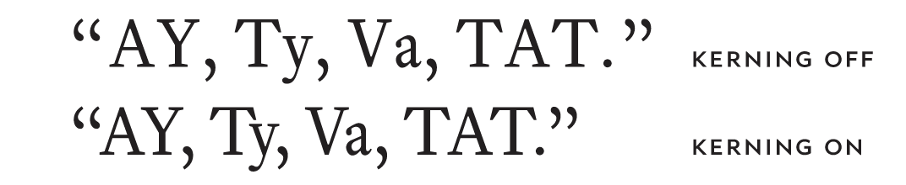

It’s also possible to manually kern letter pairs. For professional typographers, this is a mandatory skill, but for everyone else, the built-in kerning is justfine.
Kerning is the adjustment of specific pairs of letters to improve spacing and fit. (It’s distinct from
letterspacing
, which affects all pairs.) Most fonts come with hundreds and sometimes thousands of kerning pairs inserted by the font designer.
Also, watermarks can darken considerably when photocopied, aggravating the problem. It’s hard to make watermarks look good. Better to convert the watermark to a notice within the header or footer.